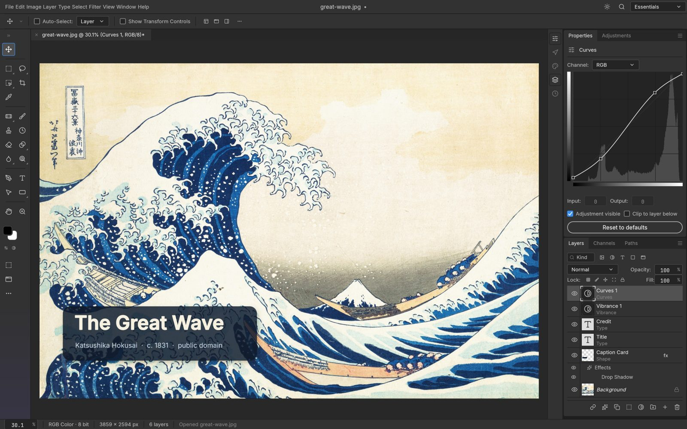

One developer, one AI model, seven Adobe apps — and now Office
ArtCraft says it rebuilt Photoshop, Premiere and Lightroom as free, open-source software. The legal and economic questions are only starting.

Brandon Thomas, founder of the small studio ArtCraft, has published seven open-source applications that mirror Adobe's flagship tools, among them PhotoCraft for Photoshop, FilmCraft for Premiere and LightCraft for Lightroom. He says he wrote them in Rust with Anthropic's Claude Opus 5.5. By October 8, PhotoCraft had passed 23,000 stars on GitHub.
Thomas calls the apps clean-room reimplementations, built from public specifications and observed behaviour rather than copied code. PhotoCraft's support for PSD files rests on the format specification Adobe itself published.
The project does not stop at Adobe. Clones of Word, Excel and PowerPoint are under way, at an earlier stage; ArtCraft claims its Excel version already covers 89 percent of the ribbon commands and 93 percent of worksheet functions.
Why it matters
Legally, the label is contested. A traditional clean room uses two separate teams, one that studies the original and one that writes code without ever seeing it. Here there is one developer and a model trained on vast amounts of public code. Ars Technica notes that interfaces this close to the original could also raise trade-dress questions. Adobe has not commented publicly.
Economically, the story is about cost. In August, Genspark said it had built an office-suite alpha with one engineer in one week for $10,000 of AI compute. If reproducing mature software costs that little, the barrier that protects subscription software is thinning fast.
Sources: Phoronix · PetaPixel · Thurrott · tbreak, citing Ars Technica · Pasquale Pillitteri · AI Weekly